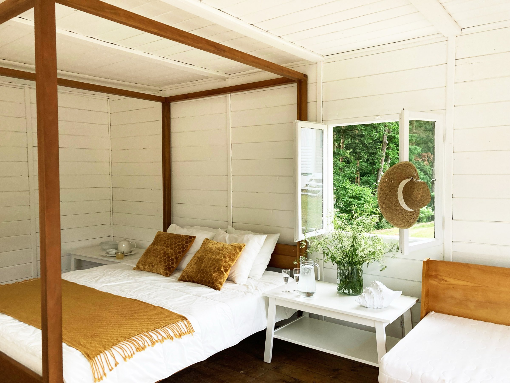
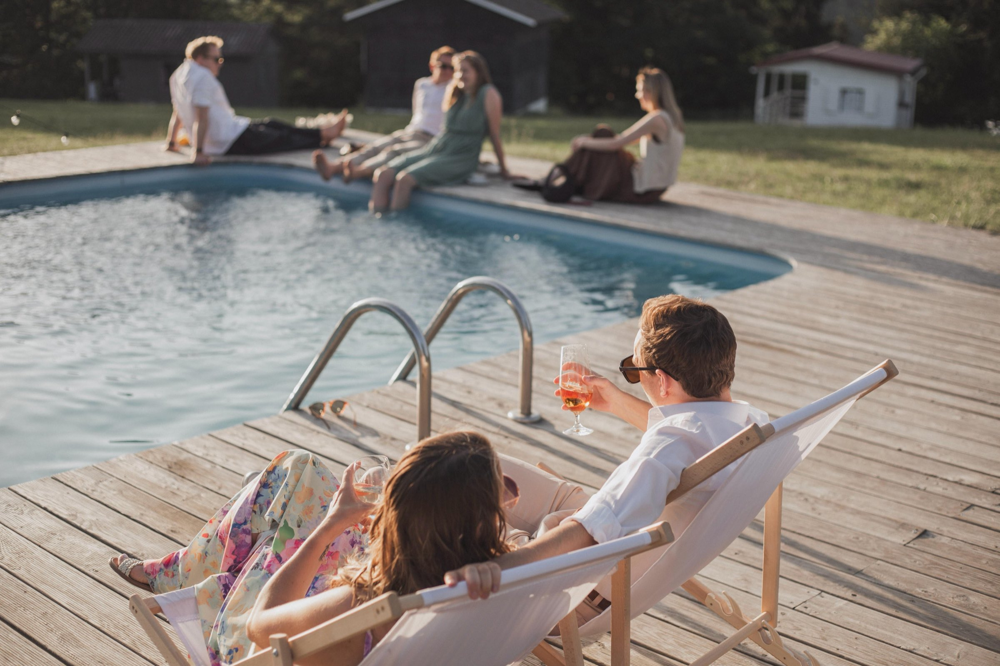
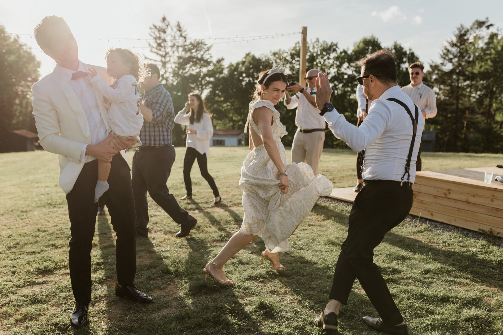

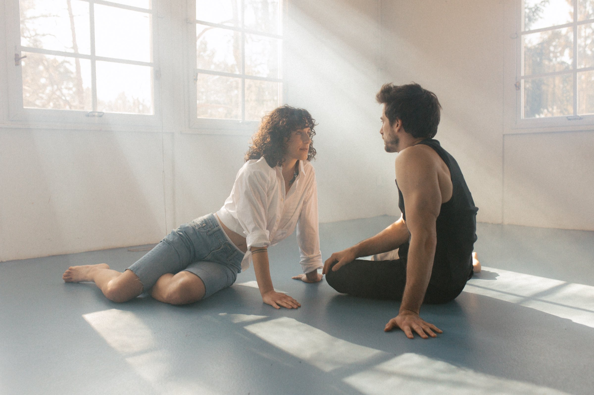
Unikátní glampingovávesnička
Pronajmete si celou vesničku: 21 domečků, bazén, velkou chatu a louku nad soutokem Otavy a Lomnice. Na svatbě, oslavě nebo firemním výjezdu tu budete jen vy a lidé, které si pozvete.
Celá 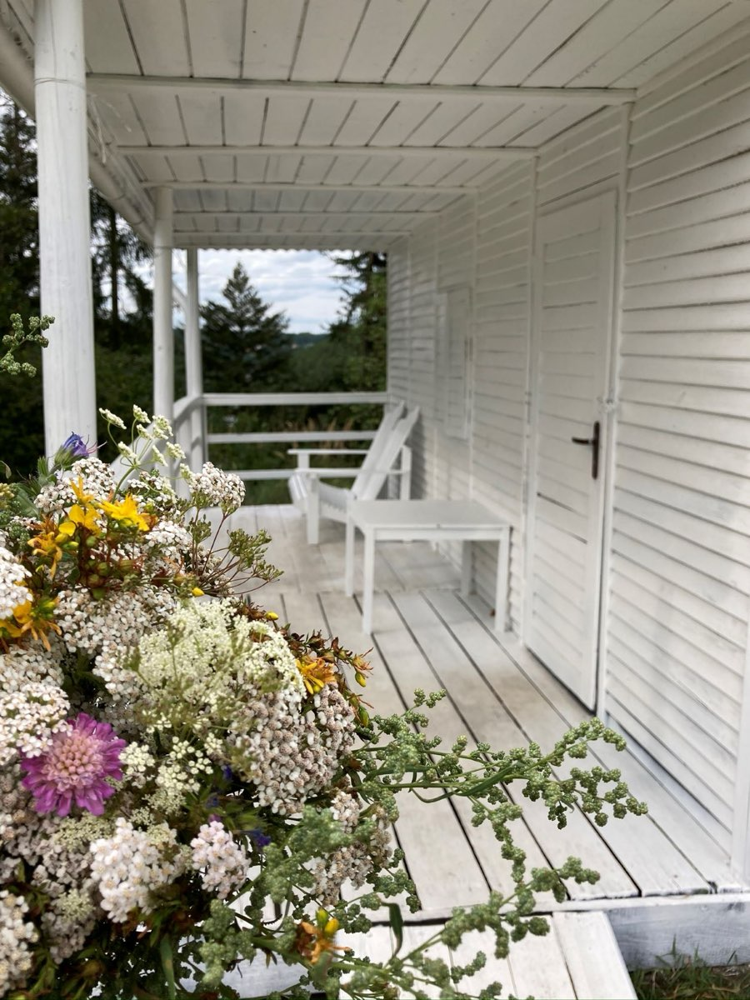
vesnička
jen 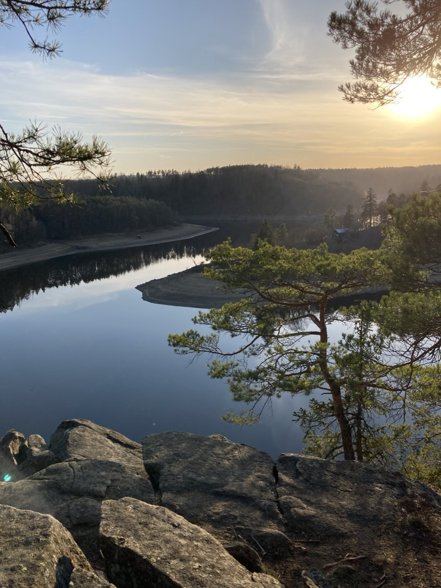
pro vás
Svatby pro lidi, kteří nechtějí svatební sál.
Oslavy bez cizích lidí u vedlejšího stolu.
Firemní výjezdy, na které se těší celý tým.
21 domečků, bazén, velká společenská chata a louka nad soutokem Otavy a Lomnice. Areál pronajímáme vždy jen jedné skupině. Jak bude váš den nebo celý víkend vypadat, určujete vy.
Jak pronájem funguje- 21
- domečků různých velikostí
- 82
- lůžek v létě, 50 v zimě
- 130
- hostů na jedné akci
- 25 000 m2
- louky a lesa u řeky
- 1 hodina
- autem z Prahy
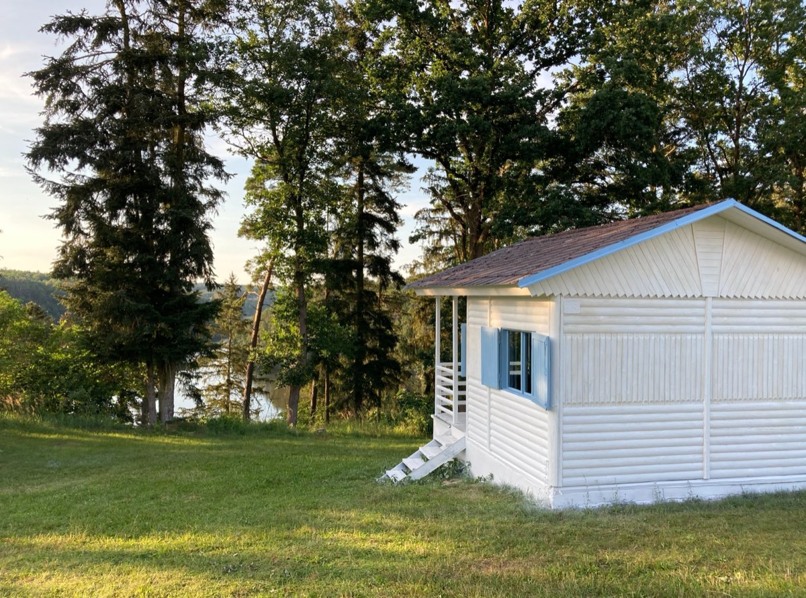
Bílý domeček
Na kraji louky
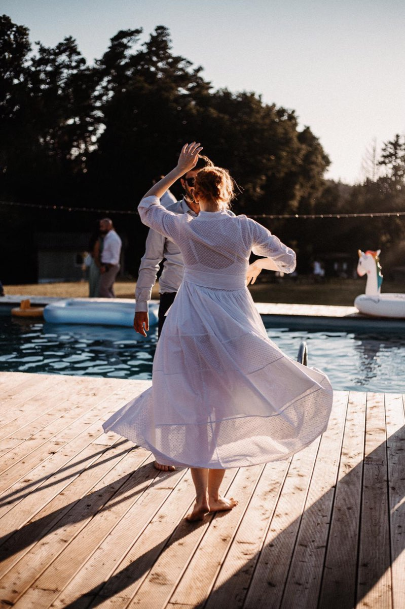
Ještě jeden tanec
Terasa u bazénu
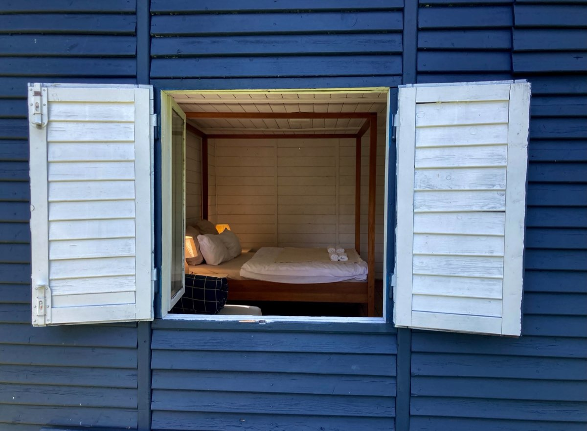
Ráno s okenicemi
Modrý domeček
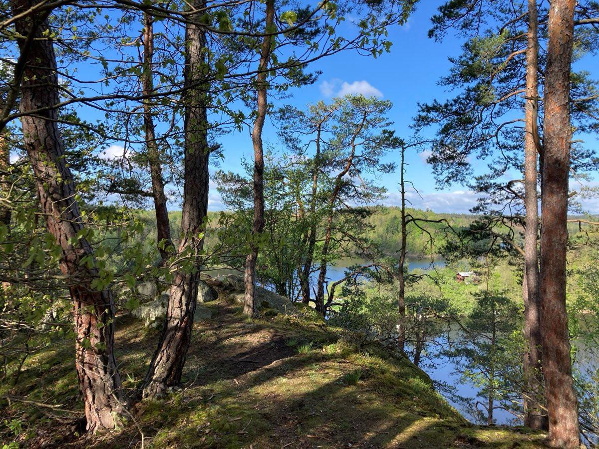
Les nad řekou
Borovice na skalách
Soutok při západu
Vyhlídka na skále
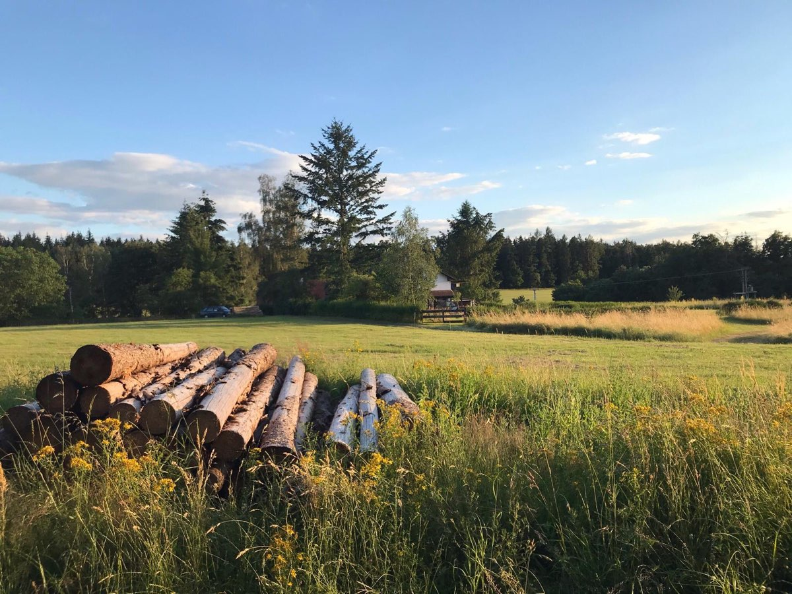
Louka v podvečer
Kmeny na louce
Je to celé vaše. Dělejte si tu, co chcete.
Areál pronajímáme vždy jen jedné skupině. Neřešíte cizí hosty u vedlejšího stolu ani pevně daný program. Jak bude váš den nebo celý víkend vypadat, určujete vy.
Nikdo cizí
Na louce, u bazénu i mezi domečky potkáte jen lidi, které jste pozvali.
Vlastní jídlo a pití
Přivezte si catering, food truck i vlastní sud. Poplatky za cizí dodavatele neúčtujeme. Když budete chtít, catering a bar zařídíme my.
Obřad tam, kde se vám líbí
Pod starým dubem, u bazénu, na skále nad soutokem nebo v lese. Pro případ deště je připravená krytá varianta.
Na jednu noc i na celý víkend
Přijeďte v pátek, slavte v sobotu a v neděli spolu posnídejte. Délku pobytu si určíte sami.
Děti a psi jedou s vámi
Hřiště, domeček se skluzavkou a louka, na které se nikdo neztratí. Psy u nás rádi vidíme.
Kapela, DJ i kino pod širákem
Taneční parket, ozvučení a projektor s plátnem jsou součástí pronájmu.
Na co si nás lidé půjčují
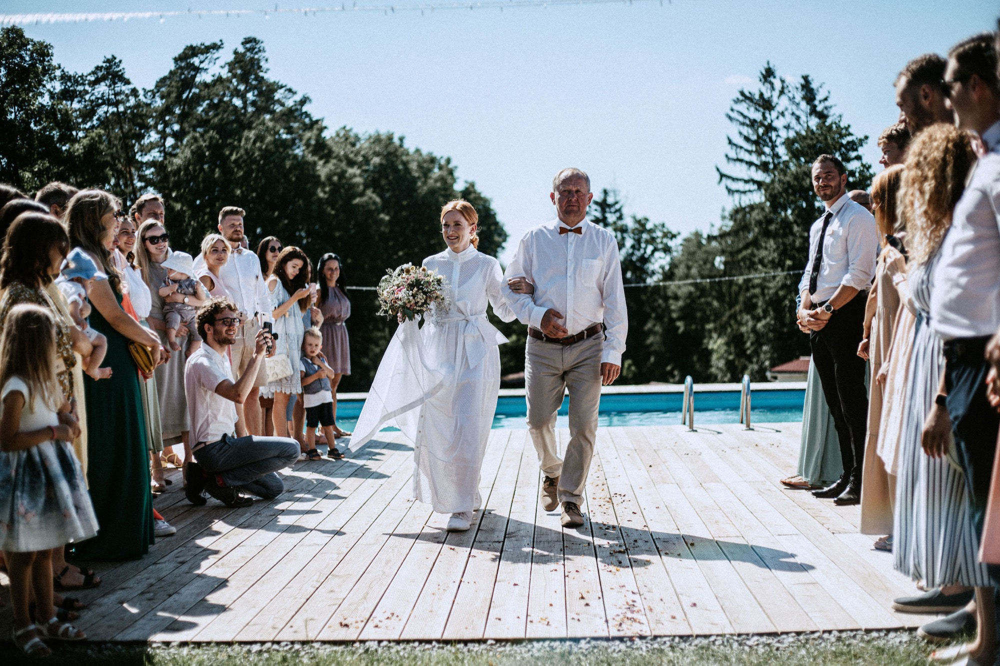
Svatba, která nevypadá jako svatba
Svatby
Žádný sál ani program po minutách. Obřad pod dubem, večeře u dlouhého stolu, tanec do rána a ráno společná snídaně u bazénu.
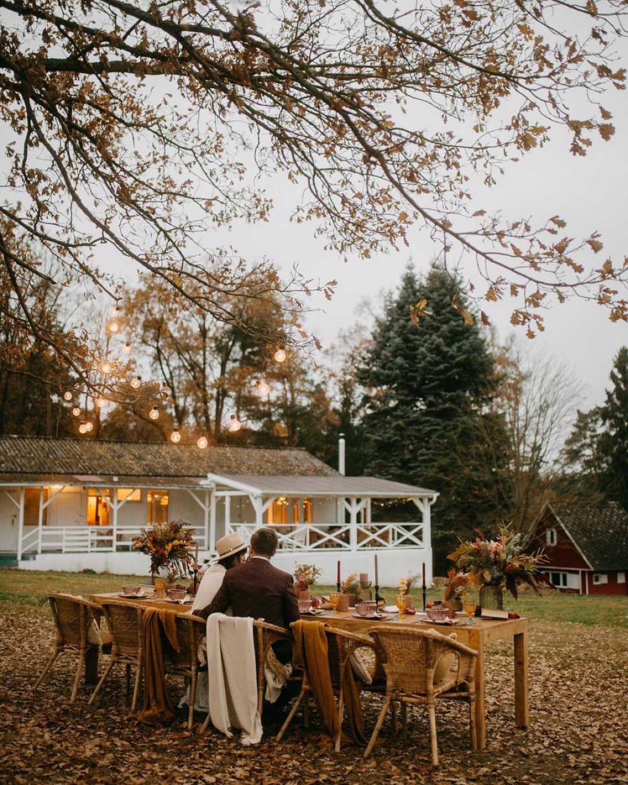
Kulatiny, ze kterých se nechce domů
Oslavy a setkání
Kulatiny, rozlučky nebo sraz po dvaceti letech. Každý má kde spát a nikdo nemusí řídit domů.

Offsite bez kravat
Firemní akce
Teambuilding, offsite nebo letní party. Workshop v chatě, večer u ohně a tým, který se potká jinak než v kanceláři.

Silvestr u kamen
Vánoce a Silvestr
V zimě pro 50 hostů. Krbová kamna, světýlka a vesnička, kde se svítí jen u vás.
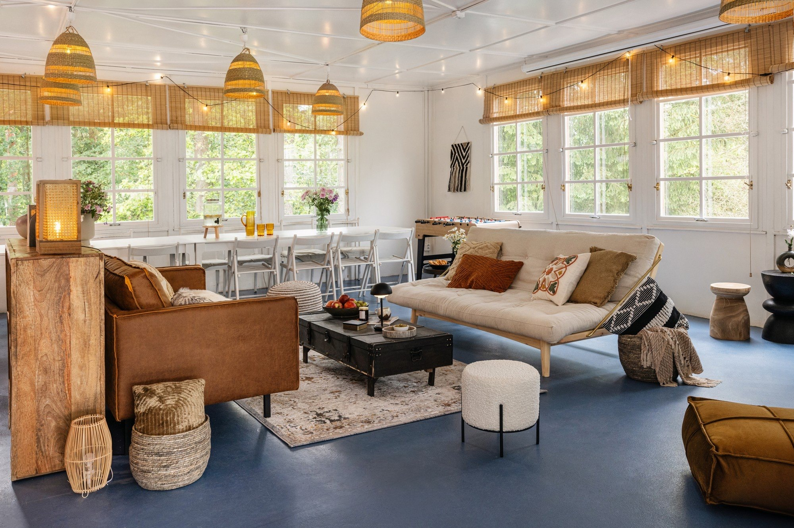
Co všechno je v ceně
Žádné příplatky za židle, sklo nebo ozvučení. Tohle všechno k pronájmu patří.
- 21 domečků s povlečením a ručníky
- Velká společenská chata s krbovými kamny
- Zastřešená terasa s gauči a křesly
- Profesionální kuchyně se sklady a myčkami
- Bar s pípou a výrobníkem ledu
- Nádobí, sklo a sváteční servis pro 82 hostů
- Bazén s dřevěnou terasou a lehátky
- Taneční parket 150 m2, ozvučení a projektor
- Ohniště, velký gril a gril u každého domečku
- Hřiště a sportovní vybavení včetně paddleboardů
- Místnost pro floristky se čtyřmi dřezy
- Wi-fi a parkování v areálu
Na přání přidáme
- Beduínský stan 10 × 15 m se světýlky25 000 Kč
- Catering a obsluhu barupodle nabídky
- Farmářskou snídani pro hostypodle počtu osob
Elektřina se účtuje podle skutečné spotřeby
21  domečků
pro 82 hostů
domečků
pro 82 hostů

Pro dva
6× · velká manželská postel

Pro čtyři až pět
9× · manželská a dvě samostatné

Pro čtyři
4× · manželská a rozkládací pohovka

Pro šest
1× · dvě ložnice a obývák

Pro osm
1× · podkroví se čtyřmi postelemi
U každého domečku je minikuchyňka, terasa s grilem a houpací síť. Koupelny a toalety jsou ve společném zázemí areálu.
Od 45 000 Kč
Celý areál na jednu noc
V zimě od 35 000 Kč. Přesnou cenu spočítáme podle termínu, počtu nocí a hostů.
Chci nabídku na svůj termínOd prvního e‑mailu ke klíčům
- 1
Vyberete si termín
V kalendáři vidíte volné víkendy na letošek i na rok 2027.
- 2
Přijedete se podívat
Provedeme vás areálem a probereme, co plánujete.
- 3
Dostanete nabídku
Pošleme cenu na míru. Po potvrzení je termín váš.
Jak to tu vypadá, když se slaví

Labuť
Bazén
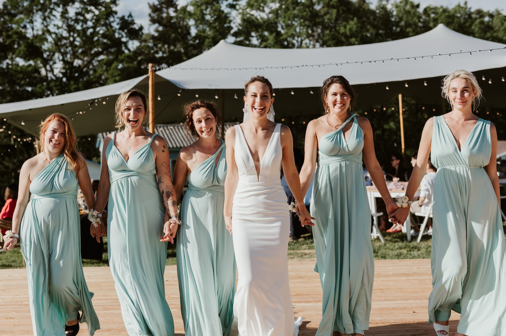
Mátová
Terasa
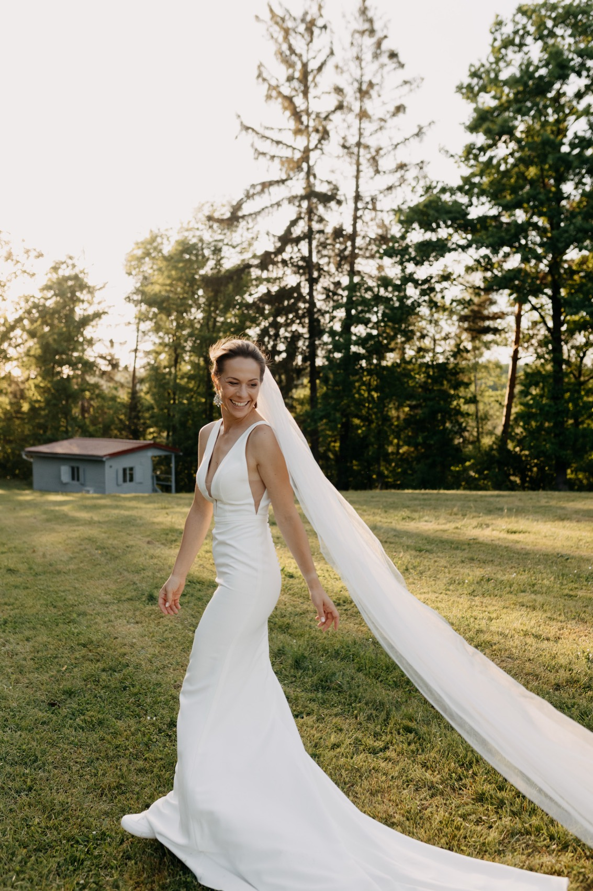
Závoj a vítr
Louka

Luční kytice
Společenská chata
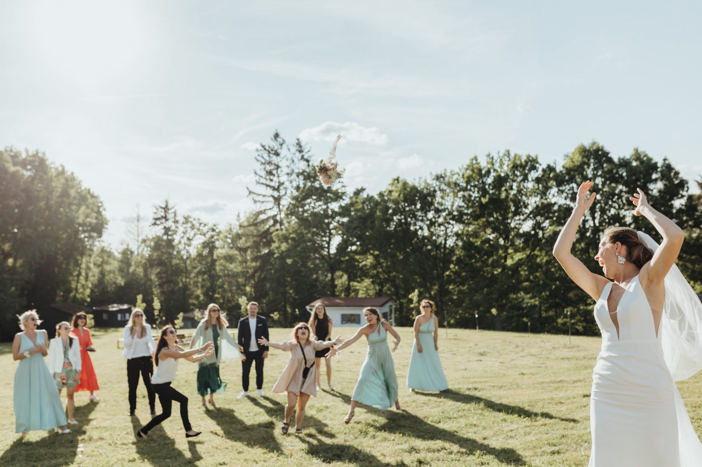
Tanec na louce
Podvečer

Starý dub
Za soumraku
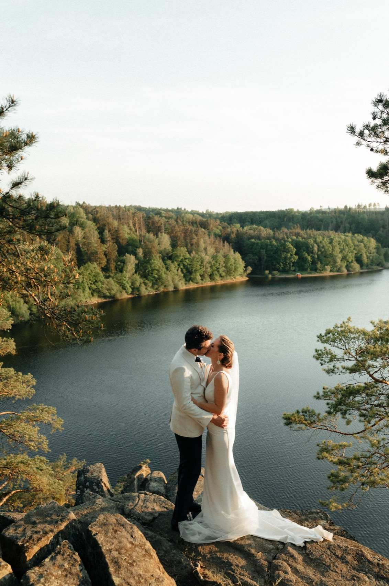
Nad řekou
Na skále
„Glampingová minivesnička s atmosférou hříšných šedesátek.“
Bonami
Psali o nás Bonami, Aktuálně.cz, Kudy z nudy a Amazing Places
Letní kampaň tu fotil Vogue
Na co se ptáte nejčastěji
Můžeme si přivézt vlastní catering a pití?
Ano. Vlastní dodavatele si můžete přivézt bez poplatku. K dispozici mají profesionální kuchyni a bar s pípou.
Kolik lidí u vás může přespat?
V létě 82, v zimě 50. Když je hostů víc, dají se po domluvě postavit stany.
Co když bude pršet?
Společenská chata, krytá terasa a parket zastřešený beduínským stanem dají dohromady skoro 300 m2 pod střechou pro 130 hostů.
Mají domečky vlastní koupelnu?
Koupelny a toalety jsou ve společném zázemí. Koupelen je šest, toalet deset a všechny se dají zamknout.
Můžeme přijet se psem?
Ano, psi i děti jsou u nás vítaní.
Jak daleko je to z Prahy?
Autem zhruba hodinu. Areál leží v Oslově u Písku nad soutokem Otavy a Lomnice.
Napište námsvůj termín
Pošlete datum a počet hostů. Ozveme se s volnými termíny a domluvíme prohlídku areálu.